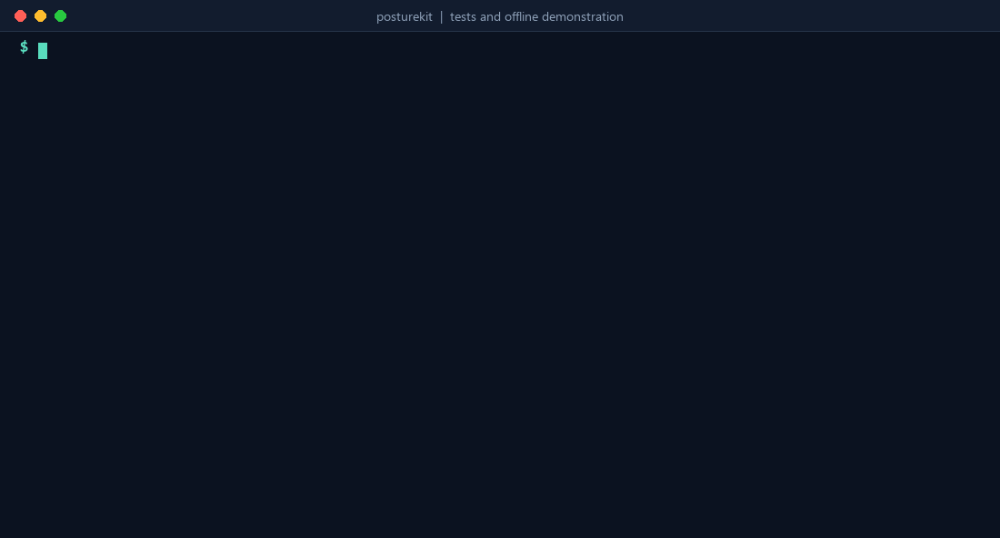
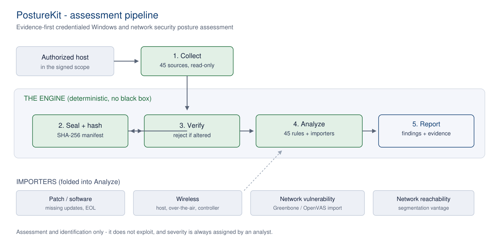

WINDOWS · ACTIVE DIRECTORY · WIRELESS · PATCH STATE · NETWORK
PostureKit
Evidence-first, credentialed security posture assessment with a hashed trail behind every result
PostureKit reads a fixed set of security-relevant facts from authorized Windows hosts, records their hashes for later integrity checks, and evaluates them against a transparent rule set. Importers fold in patch state, wireless configuration and network vulnerability scans. It identifies and reports; it does not exploit, and it never assigns severity on its own.
MIT licensed · Windows PowerShell 5.1 collector · Python 3.10+ analyzer, standard library only · 225 Python tests and 97 PowerShell fixture checks run on every push · Version 0.6

Typeset from a verified run of python Code/Tests.py and python examples/offline_demo.py. The demonstration uses synthetic data; no host or network is contacted.
How it works

Collect with Code/Run.ps1 (locally or over WinRM), seal each batch with a SHA-256 manifest, analyze with Code/Analyze.py against Code/Rules.json, and fold in patch, wireless and scan planes through the importers in Extensions/. Every result carries the control it relates to (NIST SP 800-53), the evidence pointer and its hash, the method and the outcome.
What it covers
PLANE 1Windows host configurationFirewall, SMB, RDP, UAC, LSA and credential protection, listening services and connections, installed software and updates, account and audit policy. 45 evidence sources, 45 rules.
PLANE 2Active DirectoryDomain policy, privileged groups with SIDs and members, trusts, Kerberos ticket policy read from SYSVOL, applied GPOs and directory identity, read from the domain controller.
PLANE 3WirelessSaved networks, encryption, cipher, auto-join, 802.1X server-certificate validation, PMF and pre-shared-key exposure, plus importers for over-the-air captures and controller configuration.
PLANE 4Patch stateMissing Microsoft updates with vendor CVSS scores and CISA known-exploited flags, from an offline catalog and Microsoft's free feed. No commercial scanner licence.
PLANE 5NetworkReachability and segmentation checks between vantage points, with liveness corroboration, and import of Greenbone/OpenVAS vulnerability reports as candidates an analyst confirms.
VALIDATED ONSix-machine labWindows 10, Windows 11, Server 2016, 2019 and 2022 (member and domain controller), central collection over WinRM with Kerberos, a live Greenbone scan and a non-English client.
Quick start
# Run the suites and the offline demonstration (synthetic data, no host contacted)
git clone https://github.com/abdullahzarshaid/posturekit.git
cd posturekit
python Code/Tests.py
python examples/offline_demo.py
# Authorized collection on a host named in your scope file (Windows PowerShell 5.1)
powershell -ExecutionPolicy Bypass -File Code\Run.ps1 -ScopePath scope.json -Mode Local -AssetId HOST01 -AuthorizedLabRun
# Analyze the sealed batch off the host, optionally with other planes
python Code/Analyze.py --batch Evidence/Raw/<batch-id> --output Reports/HOST01
python Code/Analyze.py --batch Evidence/Raw/<batch-id> --greenbone gvm.json --wireless-controller controller.json --output Reports/HOST01
python Code/VerifyManifest.py Evidence/Raw/<batch-id>
What it does not do.
- It does not exploit, pivot or prove exploitability. It identifies and evidences configuration and patch weaknesses.
- It does not discover hosts. It only touches machines named in the scope, with authorization.
- A network scanner detects exposure, not confirmed exploitability, so scan results are treated as candidates an analyst confirms. Severity is always left to the analyst.
Part VII of the companion
Network Security Assessment Handbook is the complete specification: design philosophy, the 45 sources and 45 rules, the patch engine, deployment adapters, evidence return and the validation status. Cite the tool with the repository's
CITATION.cff.